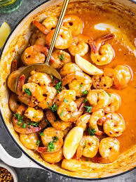

Home
Garlic Butter Shrimp

Description
Garlic Butter Shrimp is a simple yet flavorful dish made with shrimp, garlic, butter, and a splash of lemon
juice. It's quick to prepare and perfect for a delicious appetizer or a main dish served with pasta or rice.
Ingredients
- 1 pound shrimp, peeled and deveined
- 3 tablespoons butter
- 4 cloves garlic, minced
- ½ teaspoon salt
- ¼ teaspoon black pepper
- ½ teaspoon paprika
- 1 tablespoon lemon juice
- 1 tablespoon chopped parsley
Steps
- Heat a pan over medium heat and melt the butter.
- Add minced garlic and sauté until fragrant.
- Add the shrimp and season with salt, pepper, and paprika.
- Cook for 2–3 minutes on each side until shrimp turn pink.
- Stir in lemon juice and cook for another minute.
- Remove from heat and garnish with chopped parsley.
- Serve hot with pasta, rice, or toasted bread.